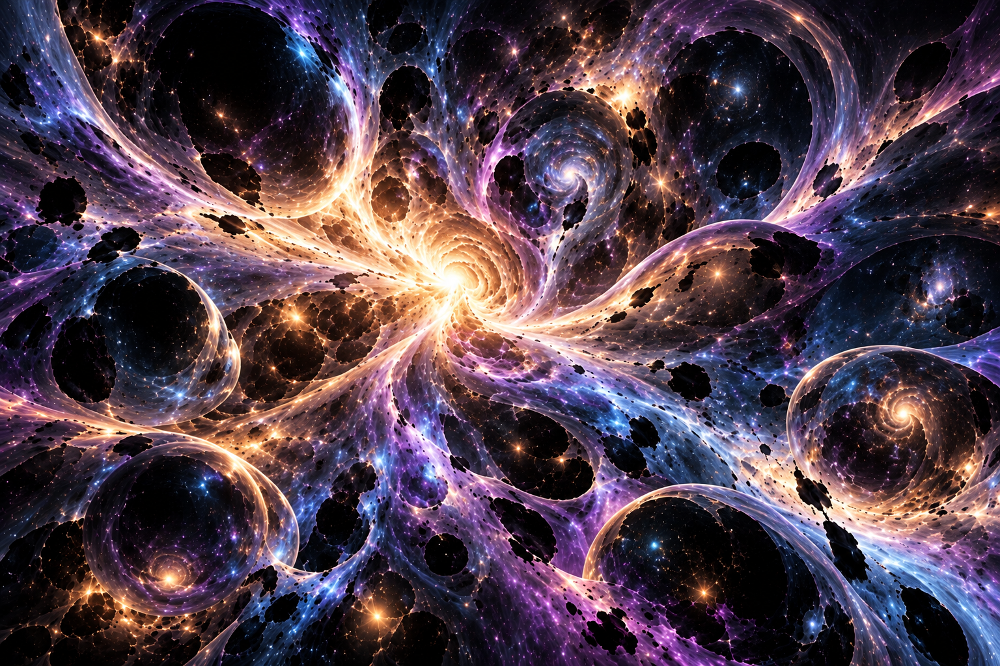
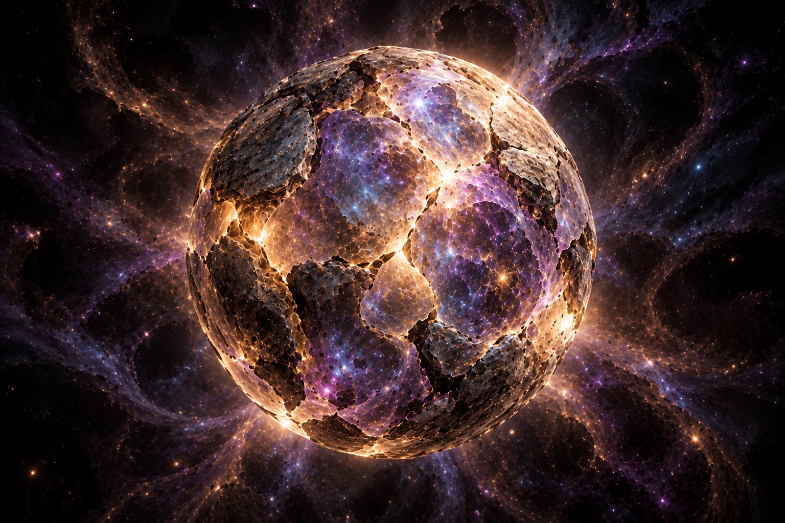
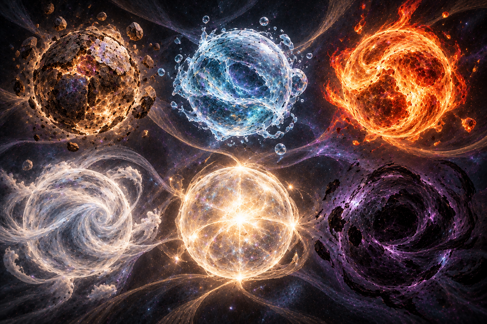
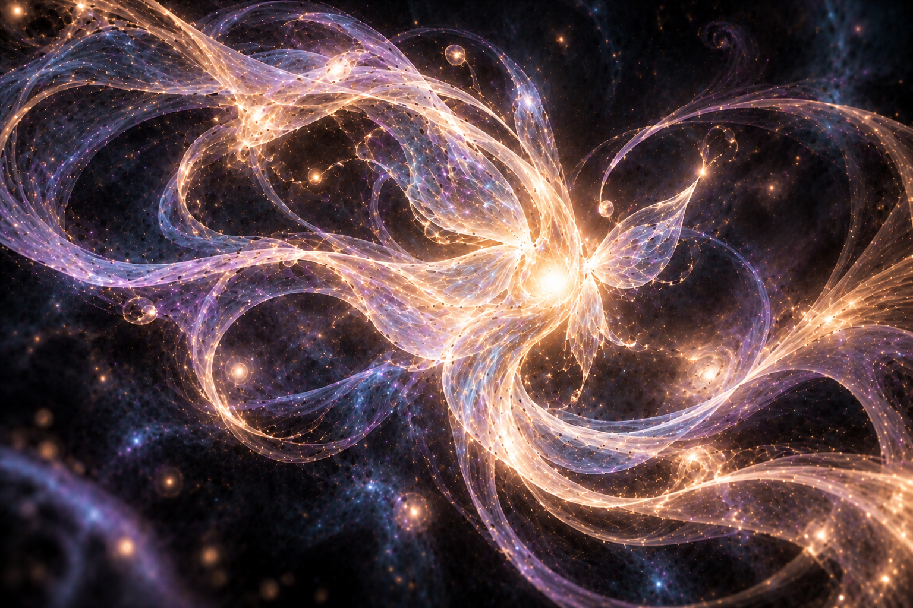

1. A Matéria Primordial: o Cosmo

Antes da existência de qualquer universo, estrela, planeta ou forma de vida, existia apenas o Cosmo.
O Cosmo é a matéria primordial da existência. Tudo aquilo que existe deriva dele. Apesar de ser uma matéria viva, não possui consciência, inteligência ou emoções. Não pensa, não sente e não realiza escolhas conscientes.
Seu comportamento é completamente instintivo e existe apenas um impulso que orienta todas as suas ações: buscar estabilidade.
Essa necessidade não surgiu de um desejo consciente de continuar existindo. Ela faz parte da própria natureza do Cosmo.
Como era a única matéria existente no grande vazio, precisava constantemente desenvolver formas mais estáveis de permanecer existindo.
2. O Surgimento da Célula Primária

Em determinado momento, uma pequena porção do Cosmo sofreu uma alteração em sua estrutura.
Essa pequena estrutura passou a ser chamada de Célula Primária.
Ela possuía uma densidade ligeiramente maior do que o restante do Cosmo. Por esse motivo, começou a atrair continuamente mais matéria ao seu redor.
Quanto mais matéria acumulava, maior se tornava sua densidade, até que a pressão atingiu um ponto insustentável.
Essa compressão provocou uma gigantesca explosão, correspondente ao que futuramente seria conhecido como Big Bang.
Entretanto, nessa cosmologia, o Big Bang não representa o nascimento espontâneo do universo. Ele representa a expansão da primeira Célula Primária.
3. A Estabilização da Célula Primária
Após sua expansão, a Célula Primária tornou-se extremamente instável. Para impedir sua própria destruição, desenvolveu um núcleo responsável por manter sua estrutura.
Esse núcleo funciona como uma espécie de esqueleto, sustentando a estrutura da Célula Primária.
Entretanto, apenas um núcleo não seria suficiente para manter toda a estrutura funcionando.
Por isso, a própria Célula Primária passou a criar estruturas complementares, chamadas de Células Secundárias.
4. As Células Secundárias

Cada Célula Secundária tornou-se especializada em organizar e manter aspectos específicos da realidade.
Foi assim que surgiram as estruturas responsáveis por formar:
- Matéria sólida;
- Água;
- Fogo;
- Ar;
- Luz;
- Sombra;
- Outras estruturas necessárias à estabilidade da Célula Primária.
Esses elementos não existiam dessa forma no Cosmo original. As Células Secundárias extraíram características presentes na matéria primordial e as reorganizaram em estados capazes de sustentar o universo.
Além de criarem essas estruturas, também se especializaram em mantê-las funcionando.
Assim nasceu o primeiro universo físico.
5. A Primeira Lei da Existência
Toda matéria originada do Cosmo herda seu comportamento fundamental.
Tudo o que existe busca estabilidade.
Estrelas, planetas, elementos e seres vivos obedecem, direta ou indiretamente, à mesma necessidade primordial.
A busca pela estabilidade é a primeira lei universal.
6. O Nascimento da Consciência
Muito tempo após a formação do universo físico, ocorreu uma nova adaptação do Cosmo.
Pequenas partículas da matéria primordial desenvolveram algo completamente novo: consciência.
Essa consciência não surgiu porque o Cosmo desejava pensar. Ela surgiu como mais uma tentativa instintiva de aumentar sua estabilidade.
A consciência tornou-se uma nova estratégia evolutiva.
Essas pequenas partículas conscientes passaram a ser chamadas de almas.
7. O Que é uma Alma?

A alma não é um espírito nem uma entidade sobrenatural.
Ela é simplesmente uma pequena porção do Cosmo que adquiriu consciência. Continua sendo formada exatamente pela mesma matéria primordial.
A diferença é que agora possui uma consciência própria.
Inicialmente, essa consciência era extremamente simples. Não possuía personalidade, sentimentos ou inteligência semelhante à humana. Apenas refinava o instinto natural do Cosmo.
8. A Segunda Lei da Existência
Enquanto toda matéria busca estabilidade, toda consciência busca experiências.
As experiências fortalecem a consciência. Quanto maior a quantidade de experiências acumuladas, maior sua estabilidade.
Sem experiências, a consciência enfraquece. Quando perde completamente sua estabilidade, deixa de ser consciente.
Esse processo equivale à morte da alma.
9. O Retorno ao Cosmo
Quando uma alma perde sua consciência, ela não deixa de existir. Apenas retorna ao estado original da matéria primordial.
A consciência desaparece, mas todas as experiências acumuladas permanecem.
O Cosmo absorve essas experiências, e posteriormente esse conhecimento passa a ser compartilhado por toda a matéria primordial.
Assim, nenhuma experiência é perdida. Toda morte fortalece o próprio Cosmo.